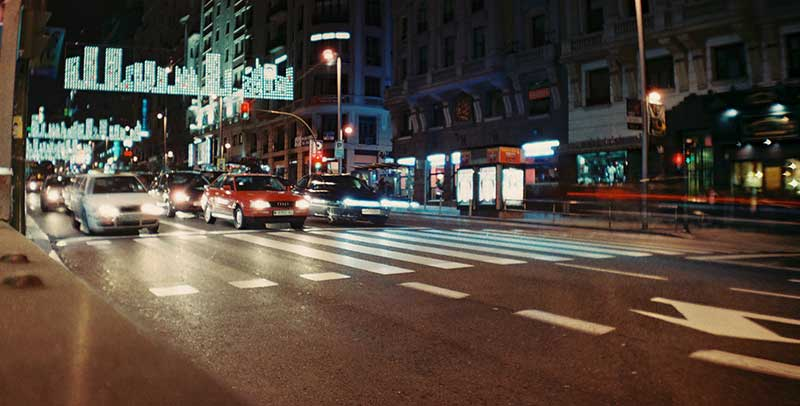

Jquery Faux Crop
Fork on GithubThis plugins resizes and positions the image inside a container to act as if it had been cropped. It finds the largest centered square area on the original image and fits it into the thumbnail wrapper. You can also pass crop coordinates as you would do with an image processor.
If you rather render the necessary markup from a rails helper (without using javascript at all), check RailsHelperFauxCrop

example A
example B
crop_x:40
crop_y:140
crop_size:130
crop_x:40
crop_y:140
crop_size:130
Basic Usage: Centered thumbnail
$("#example_A").faux_crop({
image_path : "example_image.jpg",
width : 800, // image original width
height : 406, // image orinal height
target_size : 200 // thumbnail size
})
Using Crop Coordinates
$("#example_B").faux_crop({
image_path : "example_image.jpg",
width : 800,
height : 406,
target_size : 200
original_crop_x : 40,
original_crop_y : 140,
original_crop_size : 130
})
Data attributes
You can either pass the options when calling the function or write them as data attributes on the element:
<div class='media' data-image-path="example_image.jpg" data-width="800" data-height="406" data-target-size="200" data-original-crop-x="40" data-original-crop-y="140" data-original-crop-size="130"></div>
Limitations
- Tested on the good browsers and IE8+
- Meant for square thumbnails
- It's not responsive
- This plugin is a proof of concept. If you are looking for something better take a look at karacas/imgLiquid and VuongN/jQuery-Fakecrop